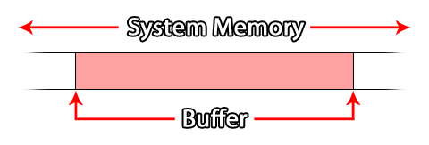
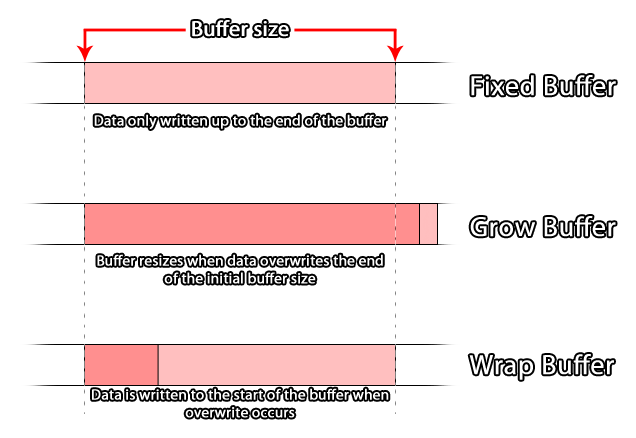
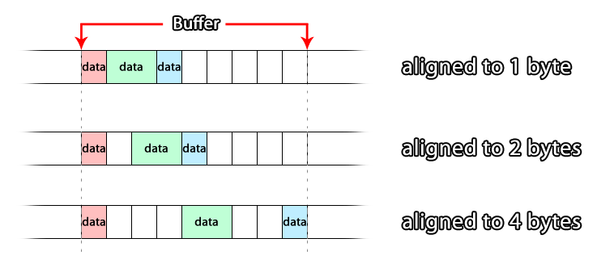

GameMaker: Studio has introduced a series of functions to
the GameMaker Language (GML) to deal with buffers. Most
people should be familiar with this term as it is used all the time
when dealing with computers and programming, but knowing the word
doesn't mean you actually know what it means. So this page aims to
explain what a buffer is and how to use them within the context of
GameMaker: Studio programming, although the general way they
work is the same no matter the language or the technology, which is
one of the reasons why they are so important.
A buffer (in programming) is basically a space within the system
memory that is used to store small packets of data for just
about anything (for example data transfer, collisions, colour data
etc...). Since it is held in system memory it is very fast to
access, and a buffer would generally be used for very short-term
storage, like receiving network information before processing it,
or for storing a checkpoint in your game (this is explained in the
example given further down the page).  Buffers are created by allocating a space in
the system memory, calculated in bytes, which is then
reserved for your game as long as your game is running or until you
delete the buffer using the appropriate function. This means that
even when your game is not in focus (for example, on a mobile
device when you take a call the game will be put into the
background) the buffer will still exist, however if the game is
closed or re-started the buffer will be lost.
NOTE: Restarting the game will not clear or delete the
buffer! But it will prevent any further access to the previously
created buffer as the id handle will have been lost, causing
a memory leak which will crash your game eventually. So, when
re-starting a game, remember to delete the buffer first.
GameMaker: Studio permits the creation of four different
buffer types. The reason for this is that buffers are designed to
be a highly optimised temporary storage medium, and as such you
should create a buffer that is appropriate to the type of data that
you wish it to store, otherwise you could get errors or cause a
bottleneck in your code. Before explaining this further,
let's look at the four available buffer types (defined as
constants in GML):
| Constant | description |
|---|---|
| buffer_fixed | A buffer of a fixed size in bytes. The size is set when the buffer is created and cannot be changed again. |
| buffer_grow | A buffer that will grow dynamically as data is added. You create it with an initial size (which should be an approximation of the size of the data expected to be stored), and then it will expand to accept further data that overflows this initial size. |
| buffer_wrap | A buffer where the data will wrap. When the data being added reaches the limit of the buffer size, the overwrite will be placed back at the start of the buffer, and further writing will continue from that point. |
| buffer_fast | This is a special "stripped down" buffer that is extremely fast to read/write to. However it can only be used with buffer_u8 data types, and must be 1 byte aligned. (Information on data types and byte alignment can be found further down this page). |
Those are the buffer types available to you when using
GameMaker: Studio, and which one you choose will greatly
depend on the use you wish to put it to. For example, a grow
buffer would be used for storing a "snapshot" of data to create a
save game since you do not know the actual amount of data that is
going to be placed in it, or a fast buffer would be used
when you know that the values you are working with are all between
0 and 255 or -128 and 127, for example when processing RGB data
from an image.
 When creating a buffer,
you should always try to create it to a size that is appropriate to
the type, with the general rule being that it should be created to
accommodate the maximum size of data that it is to store, and if in
doubt, use a grow buffer to prevent overwrite errors.
The actual code to create a buffer would look something like
this:
player_buffer = buffer_create(16384, buffer_fixed, 2);
That would create a fixed buffer of 16384 bytes and byte
aligned to 2, with the function returning a unique id
value that is stored in a variable for later referencing of this
buffer. Now we have the basic concept of a buffer explained you
should learn about data types and the previously mentioned
byte alignment.
When reading and writing data to a buffer, you do it in
''chunks'' of data defined by their '''data type'''. The '''data
type''' sets the number of bytes allocated within the buffer for
the value being written, and it is essential that you get this
correct otherwise you will get some very strange results (or even
errors) for your code.
Buffers are written to (and read from) sequentially, in that
one piece of data is written after another, with each piece of data
being of a set type. This means that you should ideally be aware of
what data you are writing to the buffer at all times. These data
types are defined in GML by the following constants:
| Data Type Constant | Bytes | Description |
|---|---|---|
| buffer_u8 | 1 | An unsigned, 8bit integer. This is a positive value from 0 to 255. |
| buffer_s8 | 1 | A signed, 8bit integer. This can be a positive or negative value from -128 to 127 (0 is classed as positive). |
| buffer_u16 | 2 | An unsigned, 16bit integer. This is a positive value from 0 - 65,535. |
| buffer_s16 | 2 | A signed, 16bit integer. This can be a positive or negative value from -32,768 to 32,767 (0 is classed as positive). |
| buffer_u32 | 4 | An unsigned, 32bit integer. This is a positive value from 0 to 4,294,967,295. |
| buffer_s32 | 4 | A signed, 32bit integer. This can be a positive or negative value from -2,147,483,648 to 2,147,483,647 (0 is classed as positive). |
| buffer_f16 | 2 | A 16bit floating point number. This can be a positive or negative value within the range of +/- 65504. (Not currently supported!) |
| buffer_f32 | 4 | A 32bit floating point number. This can be a positive or negative value within the range of +/-16777216. |
| buffer_f64 | 8 | A 64bit floating point number. This can be a positive or negative value from -(252) to 252 - 1. |
| buffer_bool | 1 | A boolean value. Can only be either 1 or 0 (true or false) |
| buffer_string | N/A | This is a UTF-8 null terminated (0x00) string. Basically a GameMaker string is dumped in the buffer, and a 0 is put at the end. |
So, say you have created a buffer and you want to write information
to it, then you would use something like the following code:
buffer_write(buff, buffer_bool, global.Sound);
buffer_write(buff, buffer_bool, global.Music);
buffer_write(buff, buffer_s16, obj_Player.x);
buffer_write(buff, buffer_s16, obj_Player.y);
buffer_write(buff, buffer_string, global.Player_Name);
looking at the example above you can see that you can write different types of data to a buffer (you are only limited to a specific data type when using the fast buffer type), and this data will be added into the buffer consecutively (although its actual position in the buffer will depend on its byte alignment, explained below). This is the same for reading information from the buffer too, and in the case of the example given above, you would read from the buffer in the same order that you wrote the data, checking for the same data type, eg:
global.Sound = buffer_read(buff, buffer_bool);
global.Music = buffer_read(buff, buffer_bool);
obj_Player.x = buffer_read(buff, buffer_s16);
obj_Player.y = buffer_read(buff, buffer_s16);
global.Player_Name = buffer_read(buff, buffer_string);
As you can see, you read out information in the same order that
you read it into the buffer. For further information on how to add
and remove data from the buffer please see the Examples
section below.
If you have been reading through this page you will have seen
references to the byte alignment of a buffer. This basically
refers to the position that new data will stored at within a
given buffer. How does this work? Well, for a single byte aligned
buffer, each piece of data is written to the buffer sequentially,
with each new data piece being added directly after the previous.
However a 2 byte aligned buffer will write each piece of data to
intervals of 2 bytes, so that even if your initial write is 1 byte
of data, the next write will be moved to align to two bytes.
 So, if your
byte alignment is set to, say, 4 bytes and you write a single piece
of data which is 1 byte in size then do a buffer tell (a
tell gets the current position for reading/writing for the
buffer), you'll get an offset of 1 (the offset in this case
is the number of bytes from the start of the buffer to the current
read/write position).
However, if you write another piece of data, also 1 byte in size,
then do a buffer tell, you'll get an offset of 5 bytes (even
though you have only written 2 bytes of data) as the alignment has
padded the data to align it with the 4 byte buffer
alignment.
Basically, what this means is that alignment will only affect
where things are written to, so if you do a buffer tell
after you write something, it'll return the current write position
which immediately follows the data you've previously written. Note,
however, that if you then write another piece of data, internally
the buffer will move the write position along to the next multiple
of the alignment size before actually writing the piece of
data.
You can find two examples of using buffers on the following page: